Samtaler
Chat og opkald foregår i samtaler. Du kan oprette lige så mange samtaler, du vil. Der er forskellige typer samtaler:
1. Private samtaler (en til en)
Her chatter eller taler du privat med en anden Talk-bruger.
I sidepanelet finder du flere oplysninger om den person, du chatter med, f.eks. e-mailadresse, telefonnummer eller andet, vedkommende har delt i sin profil.

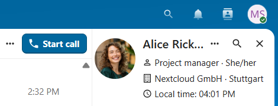
Kun du og den anden person kan se samtalen eller deltage i et opkald i den. Du kan udvide et igangværende opkald til en ny gruppesamtale ved at tilføje flere personer. Opkaldet fortsætter der uden afbrydelse.

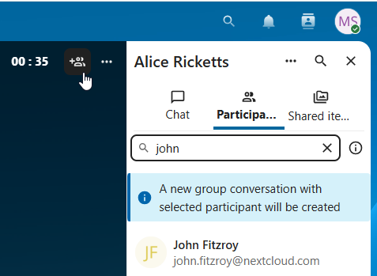
Hvis en bruger er fraværende og har angivet fravær under Personlige indstillinger > Tilgængelighed, så finder du flere oplysninger i denne samtale, f.eks. beskrivelsen, fraværsdatoen eller stedfortræderen.

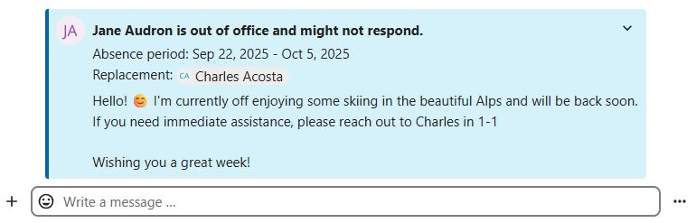
2. Gruppesamtaler
En gruppesamtale kan have lige så mange deltagere, du vil. Du kan tilføje interne brugere, e-mail-gæster, grupper eller teams, når du opretter samtalen, eller senere på fanen Deltagere.
En gruppesamtale kan deles med et offentligt link, så gæster kan deltage i chat og opkald. Den kan også åbnes for registrerede brugere (eller brugere fra appen Guests), så de kan finde og deltage i samtalen.

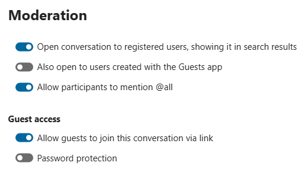
3. Note til mig selv
Det er en særlig samtale med dig selv. Her er der ingen tidsgrænse for at redigere eller slette beskeder. Du kan bruge den til at:
Tage noter: skrive idéer, påmindelser eller vigtige oplysninger ned, som du vil have ved hånden.
Lave huskelister: bruge Markdown til at lave tjeklister med opgaver, du skal nå.
Videresende beskeder fra andre chats: bruge beskedmenuen til at videresende vigtige beskeder fra andre samtaler til Note til mig selv.

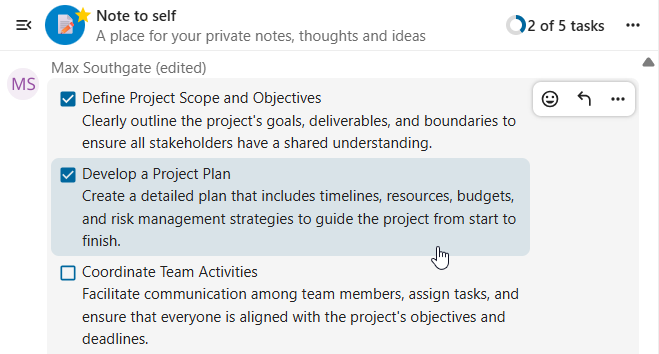
4. Midlertidige samtaler
Disse samtaler dækker nogle særlige tilfælde og findes kun i en begrænset periode. Hvor længe de gemmes, kan administratoren indstille:
Hurtige møder: Disse samtaler kan oprettes til hurtige, spontane møder. De kan startes med det samme fra Talk-dashboardet.
Mødesamtaler: De oprettes, når en samtale vælges som placering for en begivenhed i Kalender.
Telefonsamtaler: De bruges til SIP-opkald ind og ud (kræver en SIP-gateway).
Videobekræftelse: De oprettes, når nogen prøver at åbne et offentligt link, der er beskyttet med adgangskode og videobekræftelse (slettes, så snart opkaldet slutter).

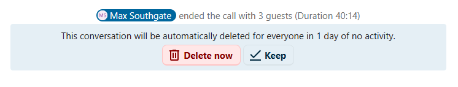
Talk-dashboardet
Talk-dashboardet er dit samlede overblik over dine samtaler. Her ser du:
Ulæste omtaler og beskeder i private chats;
Påmindelser om beskeder, du har planlagt at se på senere;
Planlagte møder med detaljer og genvejsknapper til at deltage;
Genveje til at oprette nye samtaler, deltage i åbne samtaler eller hurtigt kontrollere dine medieenheder.

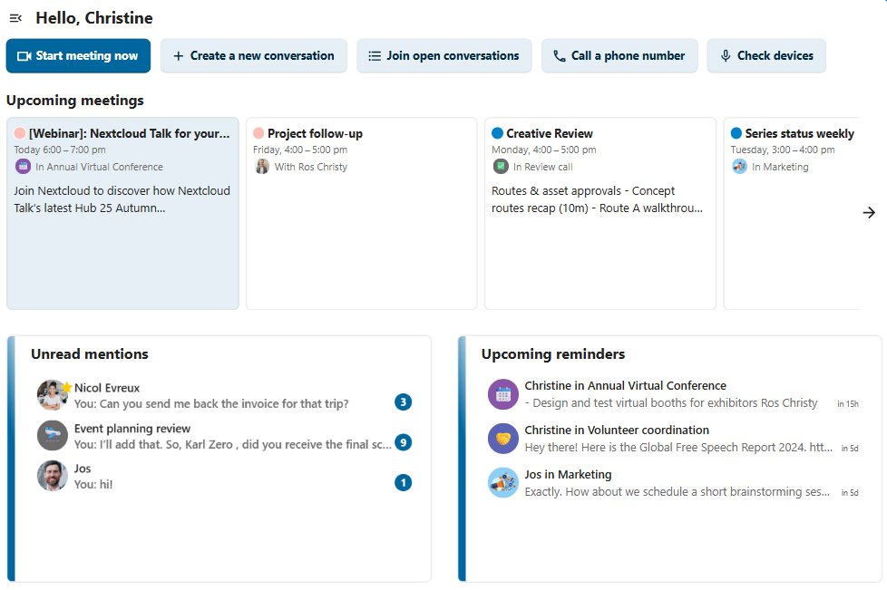
Opret en samtale
Du opretter en privat chat (en til en) ved at søge efter en brugers, en gruppes eller et teams navn og klikke på det. Hvis du vælger en enkelt bruger, oprettes samtalen med det samme, og du kan begynde at chatte. Hvis du vælger en gruppe eller et team, skal du først vælge et navn og indstillinger, før samtalen oprettes, og deltagerne tilføjes.

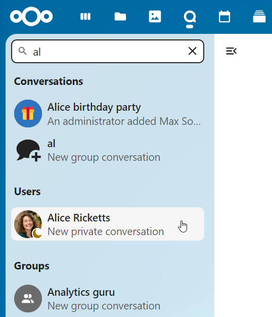
Hvis du selv vil sammensætte en gruppesamtale, så klik på knappen med taleboblen og plus-tegnet ved siden af søgefeltet og filterknappen. Vælg derefter Opret en ny samtale i menuen.

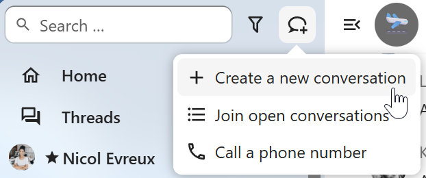
Derefter kan du give samtalen et navn og en beskrivelse og vælge et avatarbillede (et overført foto eller en emoji). Du vælger også, om samtalen skal være åben for eksterne brugere, og om andre brugere på serveren kan se og deltage i den.

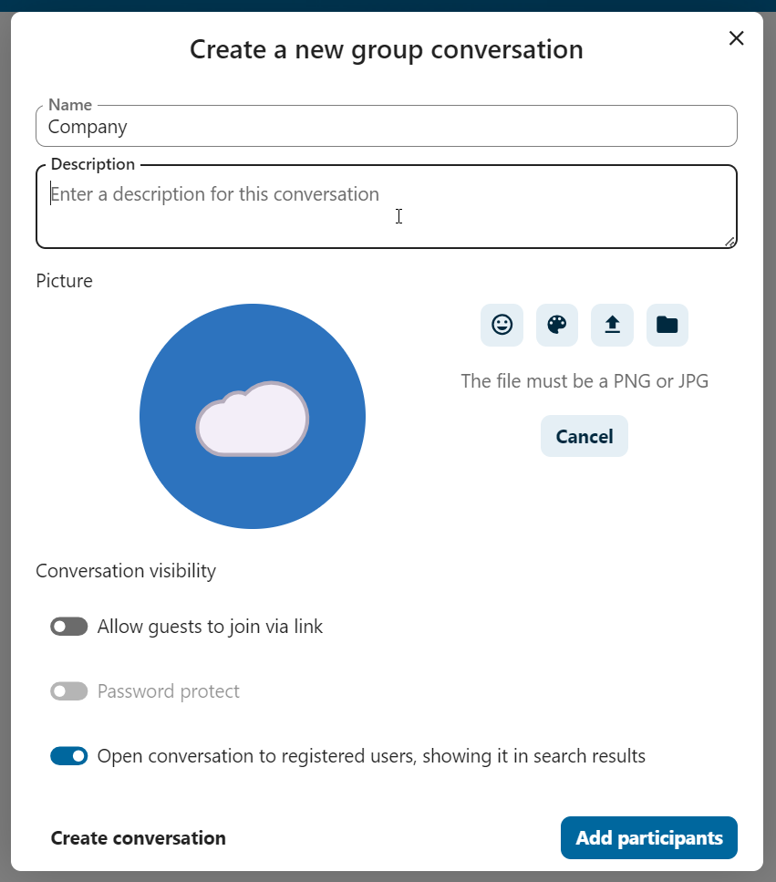
I andet trin tilføjer du deltagere og afslutter oprettelsen af samtalen.

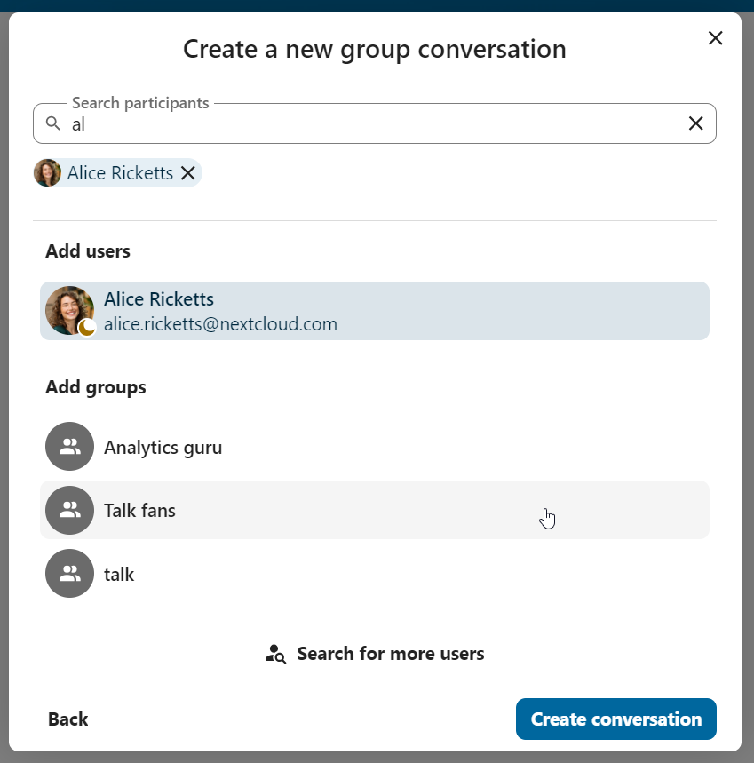
Når du har bekræftet, kommer du til den nye samtale og kan begynde med det samme.

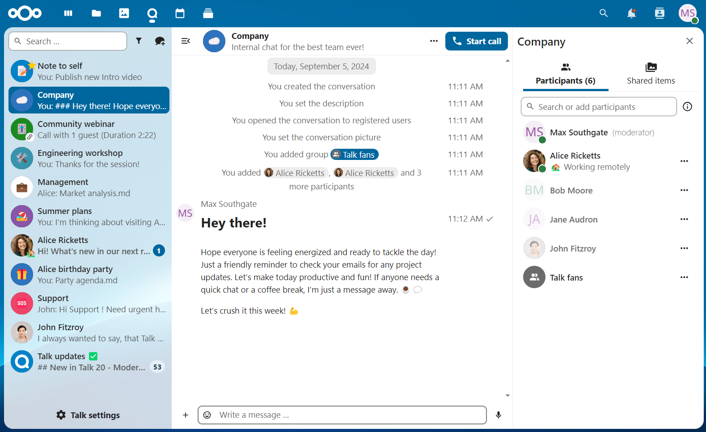
Filtrer dine samtaler
Du kan filtrere dine samtaler med filterknappen ved siden af søgefeltet. Der er flere muligheder: 1. Ulæste omtaler: vis ulæste private samtaler og gruppesamtaler, hvor du er blevet omtalt. 2. Ulæste beskeder: vis ulæste beskeder i alle de samtaler, du er med i. 3. Mødesamtaler: vis alle samtaler, der er oprettet til kommende eller tidligere begivenheder.

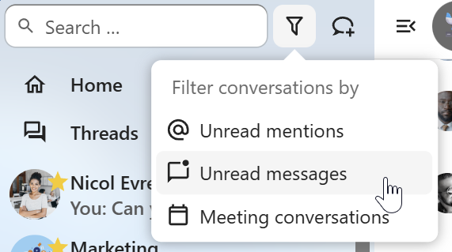
Bagefter kan du rydde filteret i filtermenuen.

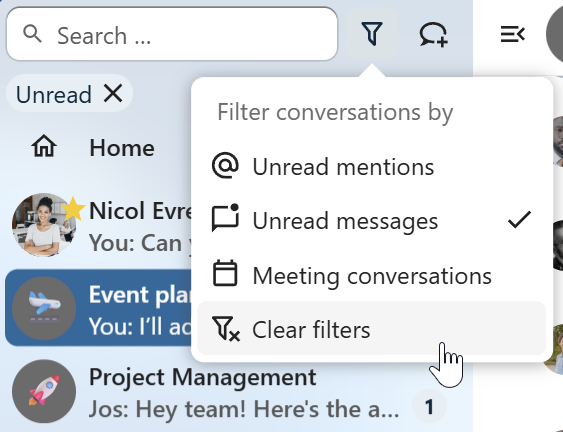
Arkivér samtaler
Du kan arkivere samtaler, du ikke længere behøver at se i din samtaleliste. En arkiveret samtale flyttes til afsnittet Arkiverede samtaler. Den vises ikke i den almindelige samtaleliste, men følger stadig det notifikationsniveau, der er valgt i dens indstillinger.

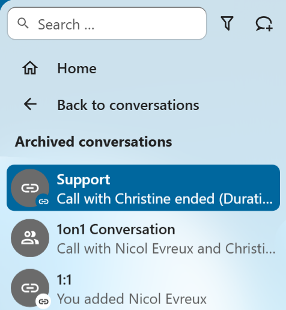
Listen åbnes med knappen nederst i navigationen.

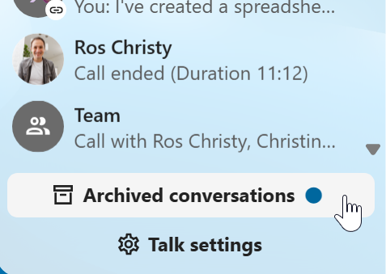
Administration af en samtale
Du er altid moderator i en samtale, du har oprettet. I deltagerlisten kan du via menuen ... til højre for et brugernavn gøre andre deltagere til moderatorer, give dem særlige rettigheder eller fjerne dem fra samtalen.
Hvis du ændrer rettighederne for en bruger, der er kommet ind i en offentlig samtale, bliver brugeren også tilføjet permanent til samtalen.

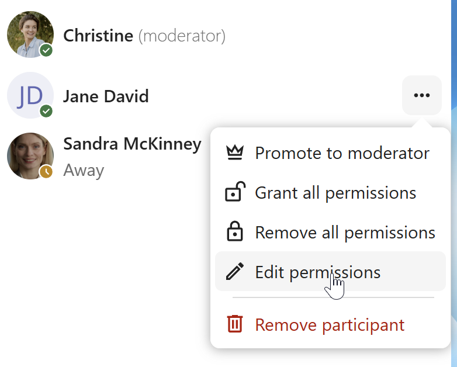
Moderatorer kan ændre samtalens indstillinger. Vælg Samtaleindstillinger i samtalens menu ... øverst for at åbne indstillingerne.

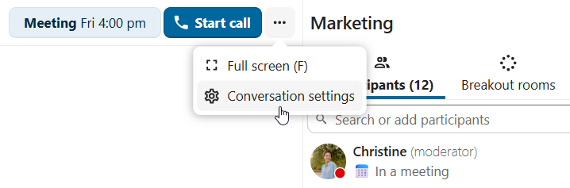
Her kan du bl.a. indstille beskrivelsen, gæsteadgang og om samtalen er synlig for andre på serveren.

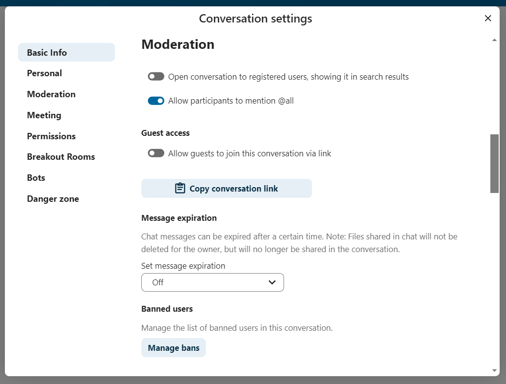
Udeluk deltagere
For at holde diskussionerne sikre og under kontrol kan moderatorer udelukke deltagere fra samtaler. Det gælder både interne brugere og gæster. For gæster blokeres deres IP-adresse også.
Vælg brugeren eller gæsten i deltagerlisten, og klik på Fjern deltager.

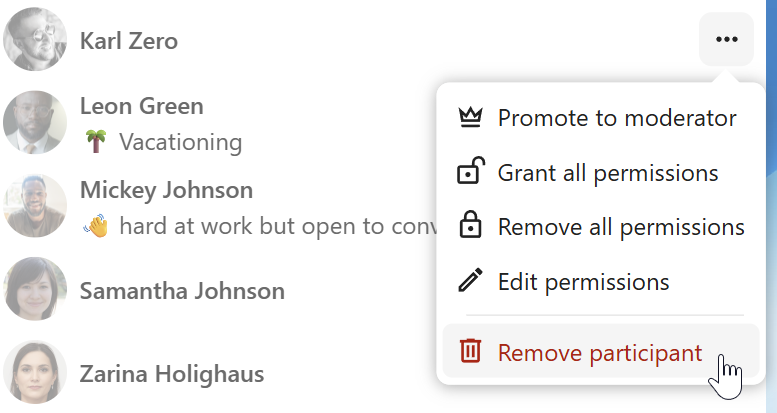
Markér derefter Udeluk også fra denne samtale, og angiv en begrundelse. Brugeren bliver fjernet og kan ikke komme ind igen.

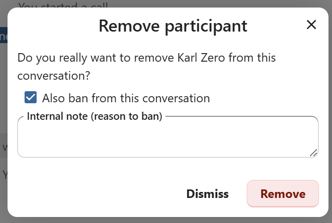
Listen over udelukkede brugere finder du senere i afsnittet Moderering i samtaleindstillingerne. Her kan du se begrundelsen og ophæve udelukkelsen, hvis det er nødvendigt.

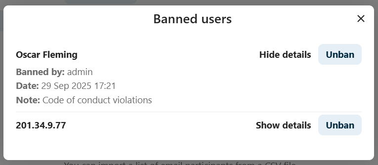
Udløb af beskeder
En moderator kan indstille udløb af beskeder under Samtaleindstillinger i afsnittet Moderering. Når en besked udløber, fjernes den automatisk fra samtalen. Du kan vælge 1 time, 8 timer, 1 dag, 1 uge, 4 uger eller aldrig (standard).

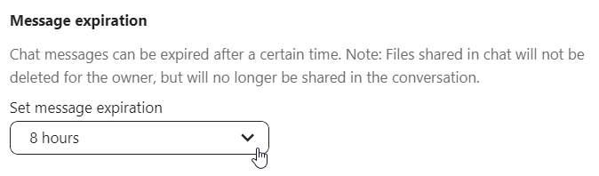
Notifikationer og privatliv
Som standard giver Nextcloud Talk dig besked om:
Nye beskeder i private samtaler;
Svar på beskeder, du har sendt;
Beskeder, der omtaler dig eller en gruppe eller et team, du er med i;
Opkald, der startes i samtaler, du er med i.
Det kan du ændre i samtaleindstillingerne. Du kan også indstille:
Vigtige samtaler: Du får altid besked om nye beskeder, også når du har status »Forstyr ikke«;
Følsomme samtaler: Beskedernes indhold vises ikke i samtalelisten og skjules i notifikationer.

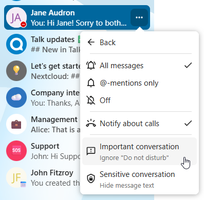
Hvis du vil have mere styr på dit privatliv, så kan du i App-indstillinger også indstille, om andre kan se, når du skriver, og når du har læst beskeder:

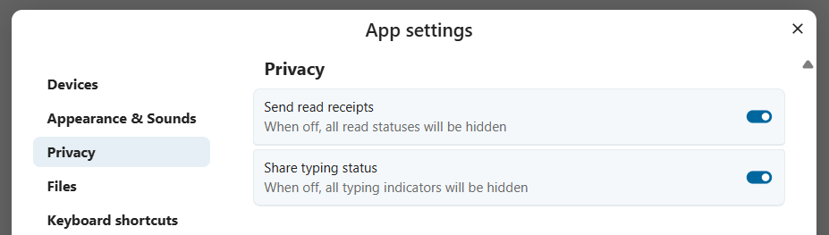